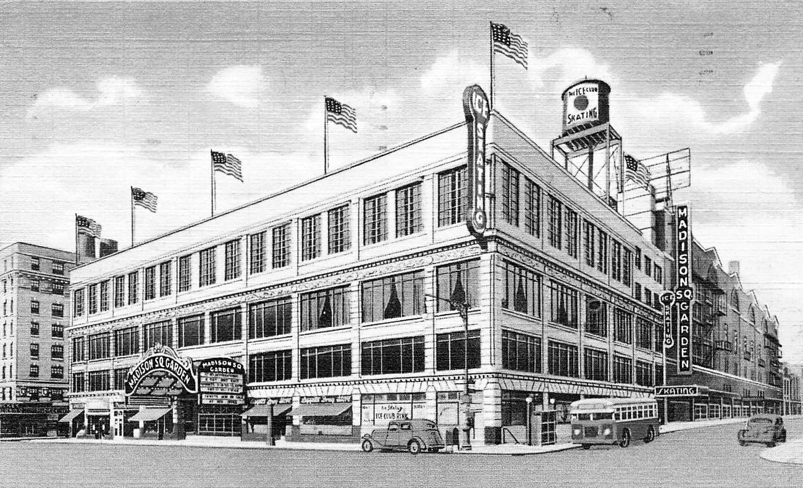

FOTO: LUISETTI, 1943 · LOS ANGELES DAILY NEWS · DOMINIO PÚBLICO (MODIFICADA)
NO LLEGABA AL ARO
PATIO Y SILUETA: DIBUJO

MADISON SQUARE GARDEN, 1941
POSTAL: FRANK E. COOPER · DOMINIO PÚBLICO (MODIFICADA)
MATASELLOS: RECREACIÓN
0
LONG ISLAND UNIVERSITY · VICTORIAS SEGUIDAS
FICHAS Y CANASTA: RECREACIÓN
MADISON SQUARE GARDEN · DIC. 1936
STANFORD
0
LIU
0
FIN DE LA RACHA
Fotos: Oakland Tribune (1944) y Los Angeles Daily News (1943), dominio público; postal de Frank E. Cooper (1941), dominio público; modificadas, vía Wikimedia Commons. Siluetas, patio, contador y marcador: recreación.